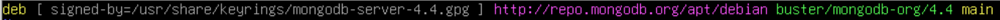
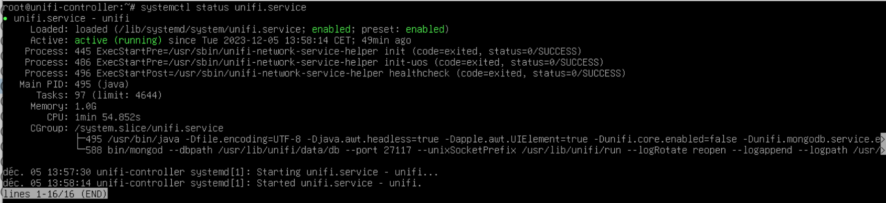
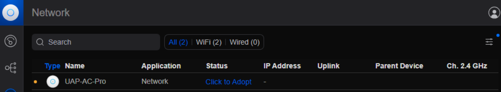
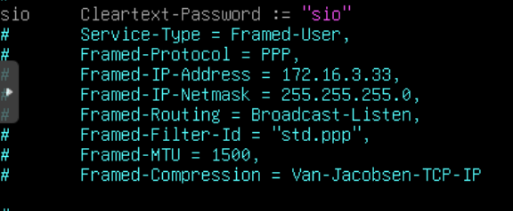
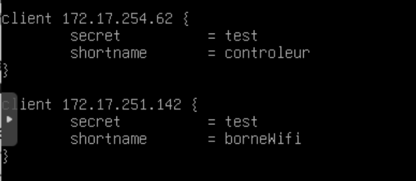
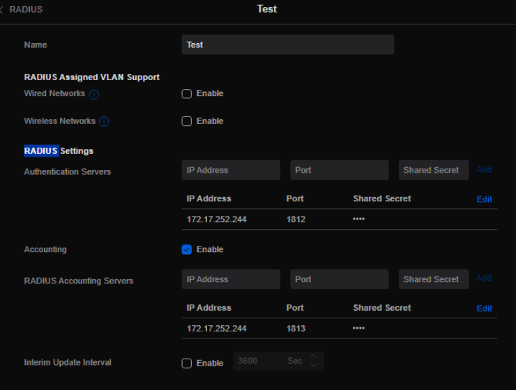
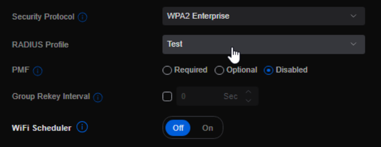
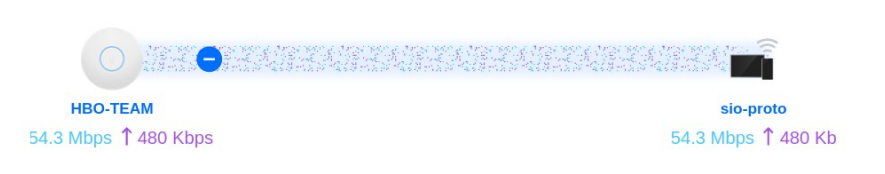

Le contrôleur est installé sur une VM sous Debian 12
- Installation des premiers paquets nécessaires :
apt-get update && apt-get install ca-certificates apt-transport-https
- Création du fichier /etc/apt/sources.list.d/mongodb-org-4.4.list ajout de la ligne nécessaires
- Ajout d'un fichier sources.list
echo 'deb [ arch=amd64,arm64 ] https://www.ui.com/downloads/unifi/debian stable ubiquiti' | tee /etc/apt/sources.list.d/100-ubnt-unifi.list
- Ajout de la clé GPG
apt-key adv --keyserver keyserver.ubuntu.com --recv 06E85760C0A52C50
- Installation de Unifi Network
apt-get update && apt-get install unifi -y
Il faut maintenant brancher la borne WIFI au port d'un switch se trouvant dans le même VLAN que le contrôleur
Il faut maintenant cliquer sur le bouton "Click to Adopt" afin d'ajouter la borne au contrôleur
- Modification du fichier /etc/freeradius/3.0/users (permet de créer un identifiant pour la connexion au WIFI)
- Ajout de l'IP du contrôleur et de la borne dans le fichier /etc/freeradius/3.0/clients.conf (permet de connecter le serveur RADIUS au contrôleur et à la borne)
- Ajout des informations du serveur dans un nouveau profil RADIUS
- Passage du WIFI déjà créé en WPA2 Entreprise et ajout du profil RADIUS
Il ne reste plus qu'à tester la connectivité du nouveau WIFI :
